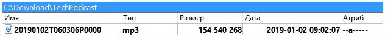
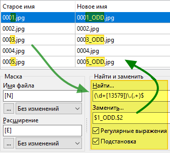

Инструмент группового переименования позволяет нам переименовывать выбранные файлы одновременно, используя разные способы.
Если мы не знакомы с инструментом группового переименования, то прежде чем приступить к его использованию, было бы целесообразно сделать несколько тестов с копиями реальных файлов во временном каталоге.
Затем, получив некоторое представление, мы можем использовать его с реальными файлами.
Предположим, мы загрузили несколько MP3-файлов подкаста.
Мы могли бы пожелать переименовать их, чтобы получить значимое имя для каждого.
Вот где инструмент группового переименования будет полезен, поскольку он поможет нам одним действием переименовать несколько файлов.
Выделим на панели элементы, которые хотим переименовать, затем вызываем инструмент группового переименования одним из способов:
Это приведёт нас к диалоговому окну инструмента группового переименования:
В верхней части мы видим таблицу с файлами, выделенными на исходной панели, по одному файлу на строку.
Таблица содержит три колонки:
| Таблица предварительного просмотра имён файлов | |
|---|---|
| Название колонки | Описание |
Старое имя | Текущее имя файла |
Новое имя | Новое имя файла, если мы подтвердим переименование |
Путь файла | Текущее расположение файла |
Идея состоит в том, чтобы некоторыми манипуляциями добиться появления в колонке Новое имя желаемых новых имён файлов.
Затем нажмём кнопку Переименовать, чтобы на самом деле переименовать файлы.
В нашем распоряжении есть инструменты для генерации новых имён файлов.
| Доступные инструменты | |
|---|---|
| Категория | Описание |
Выражения | Использование части текущего имени файла, его свойства или содержимого для генерации новых имён или их части |
Список файлов | Текстовый файл с именами, по одному на строку, для применения последовательно к каждому файлу в том же порядке |
Модификаторы | Изменение возможных новых имён, полученных из упомянутых выше инструментов |
Давайте посмотрим на выражения, которые мы можем использовать.
Выражения используются в левой части окна под меткой Маска.
Как видим, здесь в полях Имя файла и Расширение мы указываем, что будет использоваться для формирования имени файла и расширения.
Эти выражения всегда указываются в квадратных скобках.
Обычно каждое из выражений возвращает строку, которая будет частью имени файла или его расширения.
Мы можем указать в строке более одного выражения и новая часть имени файла будет результатом объединения их всех.
Основные выражения:
Для этих двух мы можем включить некоторые выражения, позволяющие использовать диапазон символов из имени файла и/или расширения.
Давайте посмотрим на таблицу, показывающую результат на примере файла:

| Возможные выражения | ||
|---|---|---|
| Выражения | Описание | Пример |
[Nx] | символ с позиции x в имени файла | [N9] = T |
[N-x] | то же самое, но отсчёт ведётся с конца имени файла | [N-5] = P |
[Nx:y] | диапазон символов имени файла с позиции x по y | [N5:6] = 01 |
[N-x:-y] | то же самое, но отсчёт ведётся с конца имени файла | [N-6:-7] = 06 |
[Nx:-y] | то же самое, но первый символ отсчитывается с начала, а последний с конца | [N10:-6] = 060306 |
[N-x:y] | то же самое, но первый символ отсчитывается с конца, а последний с начала | [N-16:6] = 01 |
[Nx,y] | диапазон символов начиная с x и длиной y символов | [N10,6] = 060306 |
[N-x,y] | то же самое, но отсчёт ведётся с конца и выбираются y символов левее x | [N-8,4] = 0603 |
[Ex] | символ с позиции x в расширении | [E1] = m |
[E-x] | то же самое, но отсчёт ведётся с конца расширения | [E-1] = 3 |
[Ex:y] | диапазон символов расширения с позиции x по y | [E2:3] = p3 |
[E-x:-y] | то же самое, но отсчёт ведётся с конца расширения | [E-3:-2] = mp |
[Ex:-y] | то же самое, но первый символ отсчитывается с начала, а последний с конца | [E1:-2] = mp |
[E-x:y] | то же самое, но первый символ отсчитывается с конца, а последний с начала | [E-2:3] = p3 |
[Ex,y] | диапазон символов начиная с x и длиной y символов | [E1,3] = mp3 |
[E-x,y] | то же самое, но отсчёт ведётся с конца и выбираются y символов левее x | [E-1,2] = p3 |
Просто чтобы убедиться, что мы поняли идею, ниже пример c маской для имени файла в виде [N1,4]-[N5,2]-[N7,2]
Мы видим, что колонка Новое имя была обновлена после предложенных замен.

Здесь некоторые другие выражения, с тем же примером файла:
| Другие выражения | ||
|---|---|---|
| Выражения | Описание | Пример |
[A] | обозначает полное имя файла: полный путь, разделители пути и расширение, включая двоеточие и точку | [A] =Полное имя файла |
[A...] | диапазон, аналогично [N] и [E]: [Ax], [Ax:y], [A-x:-y] и т.д. | [A-9:-5] = P0000 |
[Y] | год даты файла, две последние цифры | [Y] = 19 |
[YYYY] | четыре цифры года | [YYYY] = 2019 |
[M] | месяц даты файла | [M] = 1 |
[MM] | месяц двумя цифрами (с добавлением лидирующего нуля, если необходимо) | [MM] = 01 |
[MMM] | аббревиатура месяца, "янв", "фев", "мар" и т.д. | [MMM] = янв |
[MMMM] | полное название месяца, "январь", "февраль" и т.д. | [MMMM] = Январь |
[D] | день даты файла | [D] = 2 |
[DD] | день двумя цифрами (с добавлением лидирующего нуля, если необходимо) | [DD] = 02 |
[DDD] | аббревиатура дня недели, "пн", "вт", "ср" и т.д. | [DDD] = Ср |
[DDDD] | полное название дня недели, "понедельник", "вторник" и т.д. | [DDDD] = среда |
[h] | час времени файла | [h] = 9 |
[hh] | час двумя цифрами (с добавлением лидирующего нуля, если необходимо) | [hh] = 09 |
[n] | минуты времени файла | [n] = 2 |
[nn] | минуты двумя цифрами (с добавлением лидирующего нуля, если необходимо) | [nn] = 02 |
[s] | секунды времени файла | [s] = 7 |
[ss] | секунды двумя цифрами (с добавлением лидирующего нуля, если необходимо) | [ss] = 07 |
[G] | GUID на лету в виде: {XXXXXXXX-XXXX-XXXX-XXXX-XXXXXXXXXXXX} | [G] =16-байтный GUID |
[Px] | имя каталога на уровне x, считая от начала пути | [P2] = TechPodcast |
[P-x] | имя каталога на уровне x, считая с конца пути | [P-2] = Download |
[C] | добавляет счётчик с параметрами из группы "Счётчик" | [C] = Номер |
[V:запрос] | пользовательская переменная, значение будет запрошено в начале процесса переименования | [V:Guest] = Запроситьзначение Guest |
Ещё один пример, где мы использовали некоторые из перечисленных выше выражений, добавив маску
[C] - [YYYY]-[MM]-[DD] @ [hh]-[nn]-[ss]
Со временем, при частом использовании, мы будем набирать по памяти то, что нам нужно!
В ожидании этого, к счастью, мы можем нажать кнопку под каждой маской и получить доступ к всплывающему меню, которое поможет нам получить нужный результат.

Также мы можем использовать информационные (контентные) плагины, информация из выбранного поля будет использоваться как часть нового имени.
В примере ниже мультимедийным плагином извлекаем продолжительность MP3-файла подкаста и в круглых скобках добавляем в имя файла:

Для переименования наших файлов мы можем использовать текстовый файл, содержащий список имён.
Предполагается, что каждая строка этого текстового файла содержит новое имя файла (включая расширение), которое будет присвоено соответствующему, в порядке расположения в таблице, файлу.
Список может быть
Если у нас уже есть такой файл, то жмём кнопку Правка и выбираем Загрузить имена из файла.

Затем нам будет предложено указать наш список файлов.
Если файл содержит то же количество строк, что и количество элементов для переименования, то в колонке Новое имя мы увидим новое имя для каждого файла.
Процесс переименования произойдёт только после нажатия кнопки Переименовать.
Подобно описанному выше существующему списку, Double Commander может предложить нам на лету создать этот список файлов.
После нажатия кнопки Правка и выбора Редактировать имена, будет создан временный текстовый файл со списком исходных имён файлов, который далее будет использоваться так же, как и в предыдущем пункте.
То же, что и выше, за исключением того, что имена файлов берутся из колонки Новое имя.
Этот метод может быть особенно полезен в случае, если использование выражений дает нам "почти" подходящие имена файлов, нам нужно будет просто сделать некоторые исправления.
Пример ниже показывает последовательность действий.

Применяются после упомянутых выше выражений и списка файлов. В их число входят:
Возможные варианты изменения регистра букв новых имён файлов:
Этот модификатор находится внутри группы Маска, но он также будет применяться, если имена файлов будут взяты из списка.
Мы можем искать в строке одну последовательность символов и заменять её другой.

Но мы также можем заменить разные последовательности на одну, разделяя их вертикальной чертой, как в примере ниже, где 2017, 2018 или 2019 будут заменены на 2020:

Мы также можем задать более одной пары последовательностей, разделяя их вертикальной чертой.
Каждая последовательность для поиска будет заменена на свою пару для замены (в той же позиции).
Ещё у нас есть возможность использовать регулярные выражения для поиска части строки, а также для замены.

Определившись с содержимым колонки Новое имя, мы готовы запустить переименование кнопкой Переименовать.
После завершения процесса переименования приложение пересканирует файлы и снова заполнит таблицу.
Колонка Старое имя обычно показывает результат нашего переименования.
Колонка Новое имя также будет обновлена, с учётом повторного применения тех же, всё ещё заданных, выражений/списков/модификаторов.
Обычно мы должны больше внимания уделить первой колонке, поскольку в ней представлены новые имена только что переименованных файлов.
Приложение может создать файл протокола (или дописать в уже существующий) с результатом запуска переименования.
Это может быть полезно, если нам понадобится найти оригинальное имя файла или что-то, что мы переименовали случайно.
Нам может потребоваться повторно использовать те же выражения/модификаторы для того же типа переименования, что и в предыдущий раз.
Вместо того, чтобы снова и снова вводить одни и те же значения, мы можем сохранить текущие в шаблон, а затем повторно использовать его позже.
Для этого жмём кнопку, дающую доступ к действиям, связанным с шаблонами, выбираем Сохранить как... и даём имя новому шаблону.
В следующий раз, когда нам понадобится, мы вызовем выпадающий список шаблонов, выберем нужный и поля будут заполнены тем, что мы сохранили.
Упомянутое меню предлагает нам различные действия, связанные с шаблонами: загрузка, сохранение, переименование, удаление, сортировка и т.д.

Дополнительные параметры, связанные с инструментом группового переименования, представлены на специальной странице настроек Double Commander.

Выбираем эту опцию, если предпочитаем использовать строку меню в верхней части окна, которая даёт нам доступ ко всем соответствующим функциям.
Может случиться так, что с нашими настройками в результирующем имени появится недопустимый для имён файлов символ.
Чтобы избежать появления ошибки, Double Commander заменит этот недопустимый символ тем, который мы укажем на странице настроек.
Если хотим просто удалить недопустимые символы, то оставляем значение пустым.
Этот параметр определяет значения по умолчанию для каждого вызова инструмента группового переименования.

Этот параметр определяет поведение Double Commander при закрытии окна инструмента группового переименования, в случае если загруженный шаблон был изменён, но мы не сохранили изменения.

Эти настройки определяют параметры сохранения файла протокола переименования.
Ранее каждый файл протокола переименования задавался для каждого шаблона, теперь Double Commander может хранить их в одном месте или использовать один файл для всех.
Также мы можем задать хранение протокола в отдельном каталоге на каждый день.